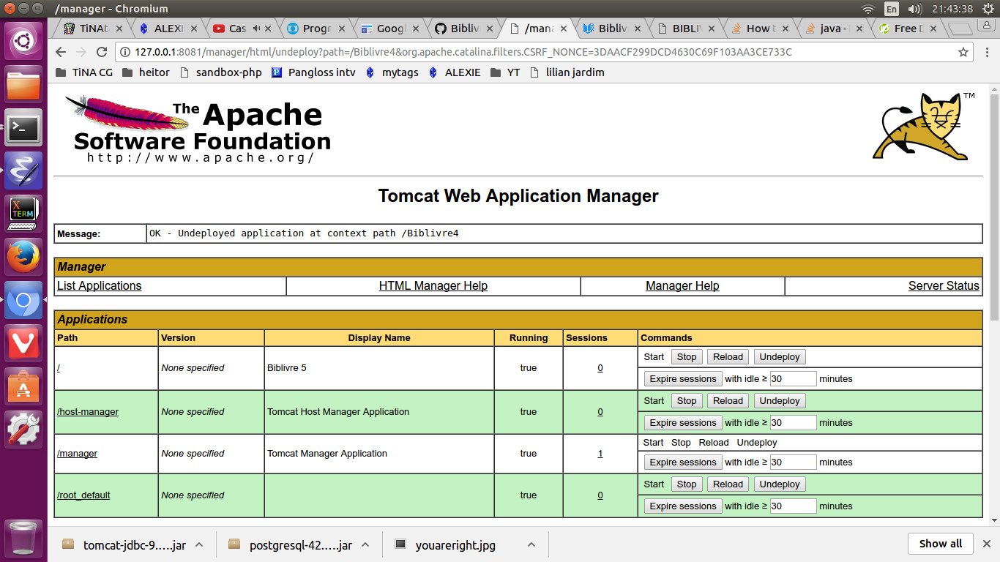
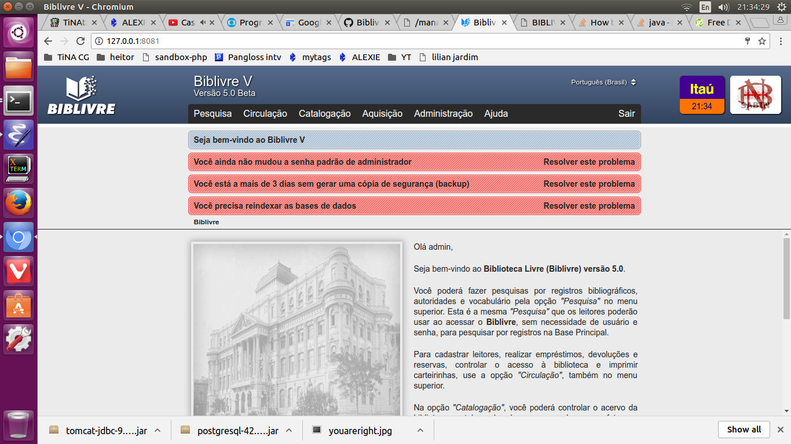
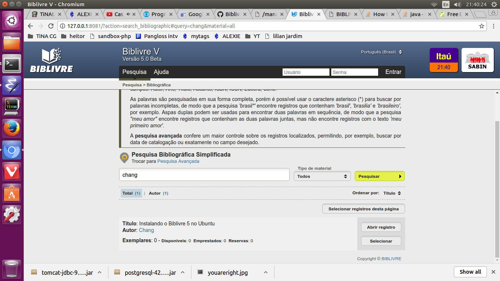

Estas instruções usam o código-fonte do GitHub (primeiro commit de 8 de agosto de 2017)
https://github.com/Biblivre/Biblivre-5
1. Instalar Java
sudo apt-get update
sudo apt-get install default-jdk
2. Instalar Servidor PostgreSQL
https://help.ubuntu.com/community/PostgreSQL
sudo apt-get install postgresql postgresql-contrib
3. Instalar Maven
sudo apt-get install maven
3a. Criar grupo 'tomcat'
sudo groupadd tomcat
sudo useradd -s /bin/false -g tomcat -d /opt/tomcat tomcat
3b. Instalar Tomcat 7
https://help.ubuntu.com/lts/serverguide/tomcat.html
sudo apt install tomcat7
sudo apt install tomcat7-admin
3b.1. Para testar, use Port 8081
Editar /etc/tomcat7/server.xml
3b.2. Para reiniciar o servidor Tomcat
sudo service tomcat7 restart
3b.3. Para gerenciar o servidor Tomcat
Editar /etc/tomcat7/tomcat-users.xml
<tomcat-users>
<role rolename="manager-gui"/>
<user username="admin" password="secreto" roles="manager-gui"/>
</tomcat-users>
3b.3.2. Para reiniciar servidor
sudo service tomcat7 restart
3b.3.3. Para usar o Manager, navegue a http://127.0.0.1:8081/manager/html

4. Clonar repositório do GitHub
git clone https://github.com/Biblivre/Biblivre-5
5. Rodar script contido no Biblivre-5/README.md
(salvei separadamente aqui como Biblivre-5/lib/biblivre-maven.sh)
#!/bin/sh
mvn install:install-file -Dfile=a2j-2.0.4.jar -DgroupId=org.jzkit -DartifactId=a2j -Dversion=2.0.4 -Dpackaging=jar
mvn install:install-file -Dfile=jzkit2_core-2.2.3.jar -DgroupId=org.jzkit -DartifactId=jzkit2_core -Dversion=2.2.3 -Dpackaging=jar
mvn install:install-file -Dfile=jzkit2_jdbc_plugin-2.2.3.jar -DgroupId=org.jzkit -DartifactId=jzkit2_jdbc_plugin -Dversion=2.2.3 -Dpackaging=jar
mvn install:install-file -Dfile=jzkit2_service-2.2.3.jar -DgroupId=org.jzkit -DartifactId=jzkit2_service -Dversion=2.2.3 -Dpackaging=jar
mvn install:install-file -Dfile=jzkit2_z3950_plugin-2.2.3.jar -DgroupId=org.jzkit -DartifactId=jzkit2_z3950_plugin -Dversion=2.2.3 -Dpackaging=jar
mvn install:install-file -Dfile=jzkit2_z3950_plugin-2.2.3.jar -DgroupId=org.jzkit -DartifactId=jzkit2_z3950_plugin -Dversion=2.2.3 -Dpackaging=jar
mvn install:install-file -Dfile=marc4j-2.5.1.beta.jar -DgroupId=org.marc4j -DartifactId=marc4j -Dversion=2.5.1.beta -Dpackaging=jar
mvn install:install-file -Dfile=z3950server-1.0.2.jar -DgroupId=br.org.biblivre -DartifactId=z3950server -Dversion=1.0.2 -Dpackaging=jar
mvn install:install-file -Dfile=itext-4.2.1.jar -DgroupId=com.lowagie -DartifactId=itext -Dversion=4.2.1 -Dpackaging=jar
mvn install:install-file -Dfile=normalizer-2.6.jar -DgroupId=com.ibm.icu -DartifactId=normalizer -Dversion=2.6 -Dpackaging=jar
Execute o seguinte
cd Biblivre-5/lib/
chmod 755 biblivre-maven.sh
./biblivre-maven.sh
6. Crie o banco de dados PostgreSQL
6a. Defina a senha do usuário (role) 'postgres'
sudo -u postgres psql postgres
\password postgres
\q
* \q (ou Ctrl-D para sair)
* (eu coloquei a senha 'secreto')
6b. No diretório Biblivre-5/sql/ execute
O Locale pode estar em LATIN 1. Para corrigir:
sudo -u postgres pg_dumpall > /tmp/postgres.sql
sudo pg_dropcluster --stop 9.1 main
sudo pg_createcluster --locale pt_BR.UTF-8 --start 9.1 main
sudo -u postgres psql -f /tmp/postgres.sql
sudo -u postgres psql -U postgres -f createdatabase.sql
sudo -u postgres psql -U postgres -f biblivre4.sql -d biblivre4
6c. Adicione o driver JDBC PostgreSQL como dependência
Edite Biblivre-5/pom.xml, dentro de </dependencies>, adicione:
<!-- org.postgresql.Driver -->
<dependency>
<groupId>org.postgresql</groupId>
<artifactId>postgresql</artifactId>
<version>42.1.4</version>
</dependency>
https://jdbc.postgresql.org/download.html
6d. Segundo StackOverflow, tomcat-jdbc-9.0.0.M26.jar precisa estar no diretório /usr/share/tomcat7/lib
https://stackoverflow.com/questions/18260569/tomcat7-connection-pool-error
http://search.maven.org/#search%7Cga%7C1%7Ctomcat-jdbc
postgresql-42.1.4.jar (Driver) também
https://jdbc.postgresql.org/download.html
6e. Para reiniciar o servidor Tomcat
sudo service tomcat7 restart
6f. Adicionar bancos de dados 'biblivre3' e 'biblivre4_b3b_restore' (porque aparecem erros)
Salvar no diretório sql o arquivo 'createold.sql'
CREATE DATABASE biblivre3
WITH OWNER = biblivre
ENCODING = 'UTF8'
CONNECTION LIMIT = -1;
CREATE DATABASE biblivre4_b3b_restore
WITH OWNER = biblivre
ENCODING = 'UTF8'
CONNECTION LIMIT = -1;
Depois, execute:
sudo -u postgres psql -U postgres -f createold.sql
7. No diretório src/, crie o diretório main/
7a. Copie a pasta "src/java" para "src/main/"
7b. Edite a dependência javax.servlet no pom.xml para
<dependency>
<groupId>javax.servlet</groupId>
<artifactId>javax.servlet-api</artifactId>
<version>3.0.1</version>
<scope>provided</scope>
</dependency>
7c. Adicione a dependência de log4j
<dependency>
<groupId>log4j</groupId>
<artifactId>log4j</artifactId>
<version>1.2.17</version>
</dependency>
7d. Adicione a dependência de jsp
<!-- https://mvnrepository.com/artifact/javax.servlet.jsp/javax.servlet.jsp-api -->
<dependency>
<groupId>javax.servlet.jsp</groupId>
<artifactId>javax.servlet.jsp-api</artifactId>
<version>2.3.1</version>
<scope>provided</scope>
</dependency>
7e. Adicione a dependência de Spring-context e Spring-context-support
<!-- https://mvnrepository.com/artifact/org.springframework/spring-context -->
<dependency>
<groupId>org.springframework</groupId>
<artifactId>spring-context</artifactId>
<version>4.3.10.RELEASE</version>
</dependency>
<!-- https://mvnrepository.com/artifact/org.springframework/spring-context-support -->
<dependency>
<groupId>org.springframework</groupId>
<artifactId>spring-context-support</artifactId>
<version>3.2.16.RELEASE</version>
</dependency>
7f. Edite a dependência de jz:
<!-- z39.50 -->
<dependency>
<groupId>org.jzkit</groupId>
<artifactId>jzkit2_z3950_plugin</artifactId>
<version>2.2.3</version>
<scope>system</scope>
<systemPath>${basedir}/lib/jzkit2_z3950_plugin-2.2.3.jar</systemPath>
<exclusions>
<exclusion>
<artifactId>marc4j</artifactId>
<groupId>marc4j</groupId>
</exclusion>
<exclusion>
<artifactId>jdbm</artifactId>
<groupId>jdbm</groupId>
</exclusion>
<exclusion>
<artifactId>xalan</artifactId>
<groupId>xalan</groupId>
</exclusion>
<exclusion>
<artifactId>maven-antrun-plugin</artifactId>
<groupId>org.apache.maven.plugins</groupId>
</exclusion>
<exclusion>
<artifactId>ant</artifactId>
<groupId>ant</groupId>
</exclusion>
</exclusions>
</dependency>
7g. Adicione as dependências jzkit restantes
<dependency>
<groupId>org.jzkit</groupId>
<artifactId>jzkit2_core</artifactId>
<version>2.2.3</version>
</dependency>
<dependency>
<groupId>org.jzkit</groupId>
<artifactId>jzkit2_jdbc_plugin</artifactId>
<version>2.2.3</version>
</dependency>
<dependency>
<groupId>org.jzkit</groupId>
<artifactId>jzkit2_service</artifactId>
<version>2.2.3</version>
</dependency>
8. Compile as páginas de estilos SCSS a CSS
sudo apt-get install ruby-sass
No diretório Biblivre-5/WebContent/static/styles/scss execute
sass --update scss:css .
mv *.css ../
9. Crie o WAR
Volte ao diretório Biblivre-5/
mvn package
9a. O WAR está no diretório Biblivre-5/target. Dê o nome ROOT.war para que esteja no Path /
mv Biblivre4.war ROOT.war
9b. Delete o diretório padrão ROOT de /var/lib/tomcat7/webapps/
9c. Adicionar WAR ao servidor Tomcat
Navegue a http://127.0.0.1:8081/manager/html
Use a opção "WAR file to deploy"
10. Para entrar como administrador, use o login 'admin' com a senha padrão 'abracadabra'. No meu computador, mudei a senha para 'secreto'
A. Arquivos Log localizados em /var/lib/tomcat7/logs/
A1. Para exibir todas mensagens de erro
Crie o arquivo /var/lib/tomcat7/webapps/Biblivre4/WEB-INF/classes/logging.properties com esse conteúdo e reinicie o servidor
org.apache.catalina.core.ContainerBase.[Catalina].level=INFO
org.apache.catalina.core.ContainerBase.[Catalina].handlers=java.util.logging.ConsoleHandler
Após escolher opção "Biblioteca nova"

Após adicionar um artigo

Problemas
PostgreSQL está com codificação Latin-1 em vez de UTF-8
Possívelmente é necessário trocar o locale para en_US.UTF-8 primeiro
sudo -u postgres pg_dumpall > /tmp/postgres.sql
sudo pg_dropcluster --stop 9.1 main
sudo pg_createcluster --locale en_US.UTF-8 --start 9.1 main
sudo -u postgres psql -f /tmp/postgres.sql
emacs /etc/postgresql/9.1/main/postgresql.conf
Adicionar localhost,127.0.0.1 a clientes permitidos
Usar port 5432
Problema: PSQLException: valor inválido para parâmetro "search_path": "global, public, pg_catalog"
DataSource na configuração de Tomcat
<Resource name="jdbc/Postgres" auth="Container"
type="javax.sql.DataSource"
username="biblivre"
password="oca-secreto"
driverClassName="org.postgresql.Driver"
url="jdbc:postgresql://localhost:5432/biblivre3"
maxTotal="100"
maxIdle="20"
description="User database that can be updated and saved" />
Não fazer "skip JARs", pois os dados necessários não serão incluídos
Redirecionar port 80 (WWW) para port 8080 (Tomcat):
iptables -t nat -I PREROUTING --src 0/0 --dst {{IP DO SERVIDOR}} -p tcp --dport 80 -j REDIRECT --to-ports 8080
iptables-save